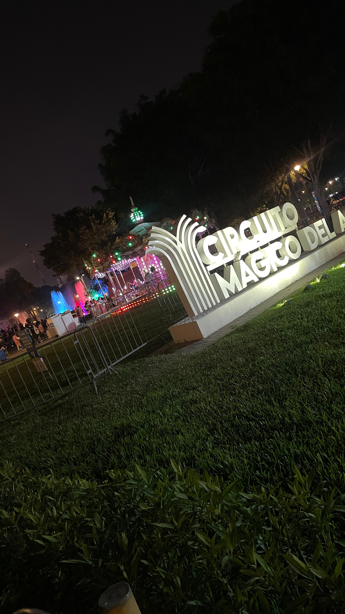
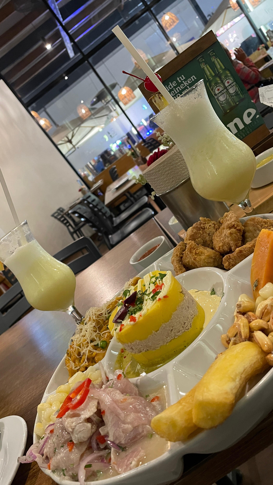
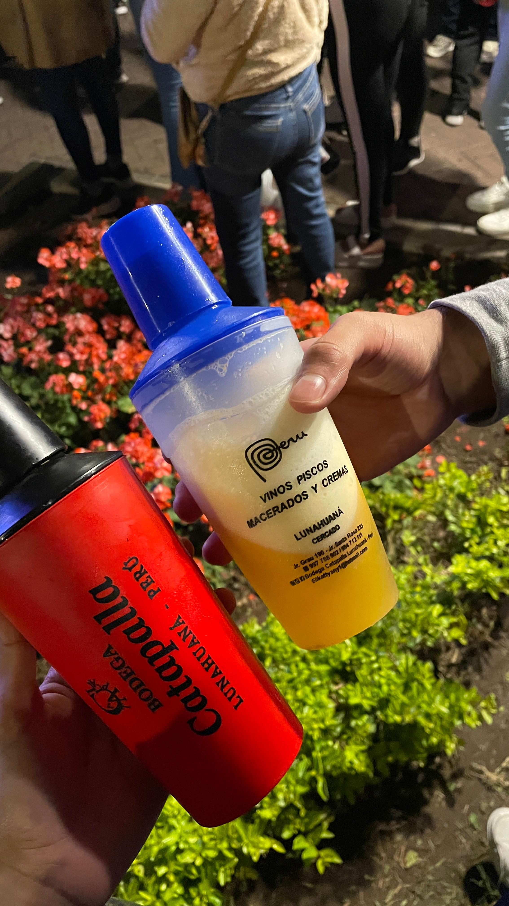

🖼️ Galeria de Fotos
Algunas de nuestras fotos juntos ❤️
El primer dino 🦖

La bolsaaa 🍥
Miraflores (la primera vez q fuimos
dormidos en el taxi) 🚕
Las marcas gracias a las
que nos conocimos 🍕🍗

Show del parque de las aguas 💦
Cita en ph16 🍽️
Plastelinas 🦆
Primera vez de la mano ğŸ¤

Celebrando el primer mes 1️⃣

Primera vez tomando juntos 🍻
Ramo por el primer mes 💐